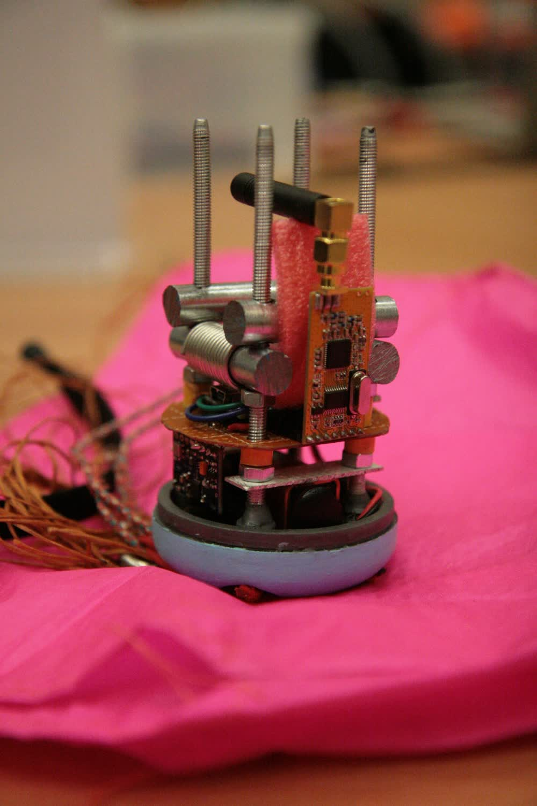
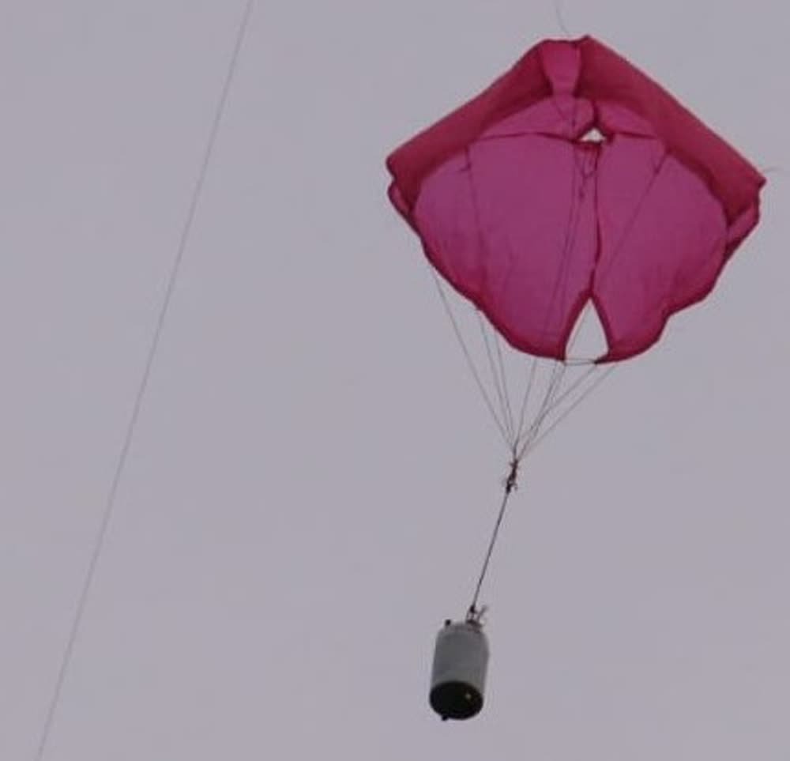
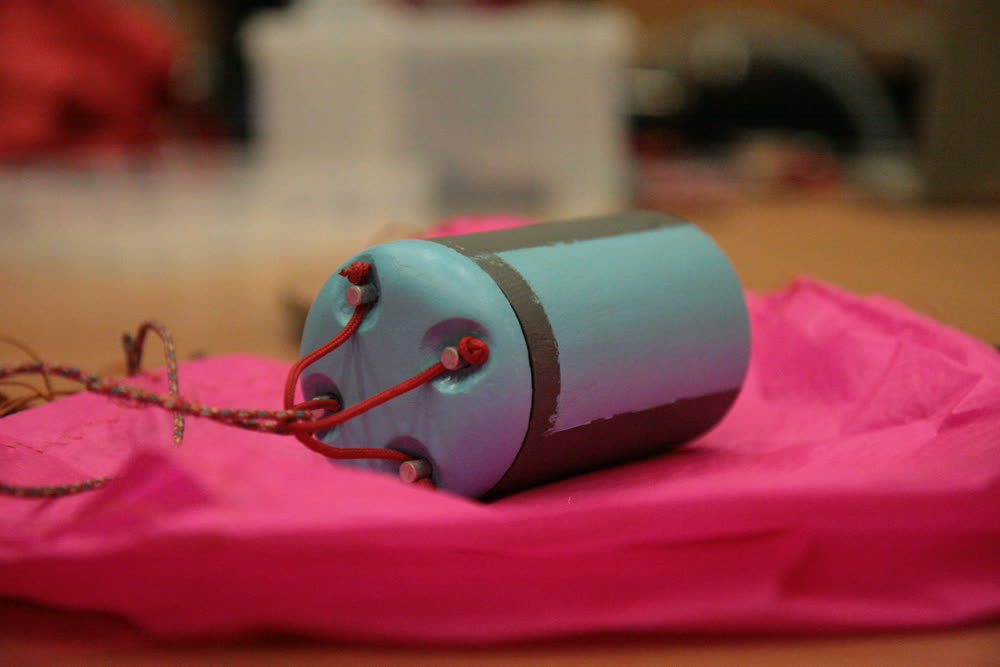
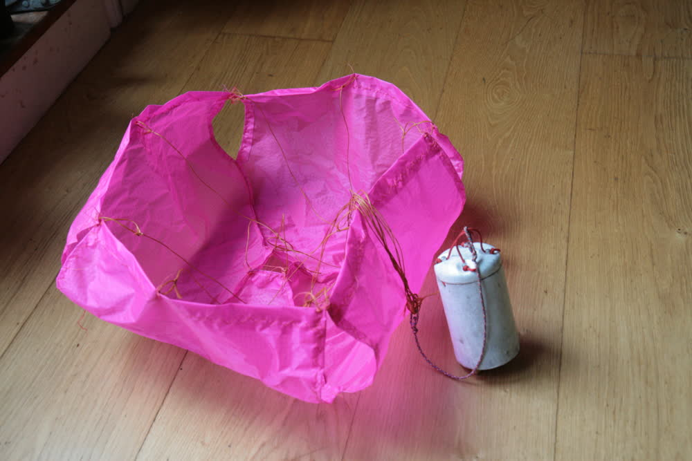

ESERO CanSat
{kind=link}
Recently I have been involved in a school project called Can-sat; a competition where teams from schools arround europe design soft drinks can sized payloads to be dropped from tethered kytoons, drones and - for teams who reach the finals - a rocket.
I designed the and made all the mechanical components of the glorified egg-drop. This consisted of a 3D printed and fibreglass composite payload fairing and the parachute.
Parachute
The parachute is a mix between the cruciform and anular shapes. It features a rounded top with a pull down apex (a bit toroidial), but has the square cross section of a cruciform chute. It seemed to be relativley stable in flight. The pattern was drafted by hand.
{kind=link}
One advantage of my design - that I didn't appreciate until making it - is that it is made from only four pieces of fabric. This was especialy convenient as all the parts for the project arrived three days before the launch.
Hull
Our design is focused primarily on robustness and simplicity. The shell is made from two layers of spread tow 200gsm fibreglass cloth - making it very impact resistant - and the flat top is of balsa-sandwitch construction for high stiffness. The components inside are held to the shell by four M5 aluminium studs. The same studs are cross drilled for the parachute connection which features a yoke designed to distribute the load evenly across the four studs regardless of the direction of loading.
We also painted the can sky blue with grey stripes (we realised that having it sky blue only would be a bad idea). The veritcal stripes allow us to visually determine wether the can is spinning in flight (a problem we had in the last competition).
|  |  |
{kind=link}
{kind=link}
March 2019